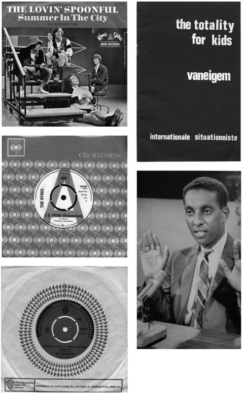
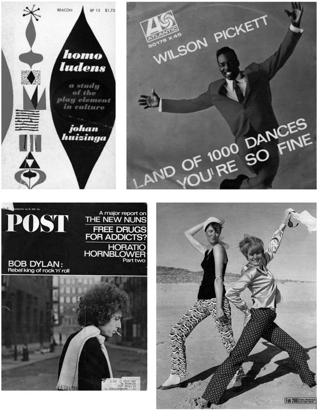

‘To enjoy the latest new thing in discotheques, you had better wear ear plugs, dark glasses and shin guards. Otherwise you might be deafened, blinded and bruised in an electronic earthquake that engulfs you completely in an experience called “total recreation”.’
Life magazine, ‘Wild New Flashy Bedlam of the Discotheque’, 27 May 1966
‘One, two, three’, ‘one, two, three’: two countdowns, punctuated by horns, act as a brake. But what’s to come cannot be stopped. There’s a fast bass run; Wilson Pickett lets loose a little scream – just as a foretaste – and the full track comes in at breakneck speed. There’s no time to think, no time to hesitate. The ride has begun. ‘All right!’ Pickett yells, before hitting the list of dances that comprise the first verse: the Pony, the Mashed Potato, the Alligator, the Watusi.
Nothing quite like ‘Land of 1000 Dances’ had been heard before. The music licks along at an incredible pace, the cyclical guitar riff counterpointed against the explosive horns. Pickett drives this instrumental intensity with vocal interjections and gospel exhortations: he grunts, he screams, and hits at top speed the first ‘na, na-ne-na-na’ section that was the song’s hook. His voice is there not so much to convey the lyric – a series of dance-floor attitudes – but to be an integral part of the rhythm.
The guitar and brass drop out, leaving just the pounding drums and Pickett himself, augmented this second time round (‘Need somebody to help me say it one time’) by a large chorus. He lets rip another scream – in tune, one of his trademark skills – and the full band returns for a long sax solo. Pickett screams again, then riffs, as the drums pound, ‘You know I feel all right, feel pretty good, y’all’.
At his prompting the massed chorus come back in for the ‘na, na-ne-na-na’ hook, before Pickett rips through the second verse – ‘Do the jerk / Watch me work, y’all’ – riding the song out with a selection of instructions and screams: ‘Ahh do it! Watch me do it! Oh, help me! Oh, help me!’ This is not an ending but an early climax. The performance feels like a section from a live show that could go on for hours, rising and falling and rising again.
In July 1966, Wilson Pickett was twenty-five, a complex mixture of abrasiveness, kindness and swagger. Dubbed ‘the wicked’ by his record company, he lived up to the image, with sharp suits, slicked-back hair and a volatile demeanour. The owner of Fame Studios, Rick Hall, told Peter Guralnick that when he first met Pickett in spring 1966, ‘He was such a good-looking black man, muscular – he reminded me of a black leopard, you know, look but don’t touch, he might bite your hand.’
By that summer, Pickett was moving very fast. After years in the music industry – his first brush with fame was in the Falcons, whose ‘You’re So Fine’ went Top 20 in 1959 – he signed to Atlantic. Beginning in summer 1965, he hit a consistent run with big sellers in the R&B chart – ‘Don’t Fight It’, ‘Ninety-Nine and a Half (Won’t Do)’ – and two pop crossover records, ‘In the Midnight Hour’ (#21) and ‘634-5789 (Soulsville, U.S.A.)’ (#13) – all recorded at Stax. The collaboration had begun with an inspired, intuitive decision by Atlantic’s Jerry Wexler, who brought Pickett down to Memphis to work with the studio and the house band responsible for successes by Carla and Rufus Thomas, Booker T. & the M.G.’s and, most recently, their breakthrough with Otis Redding, ‘I’ve Been Loving You Too Long (To Stop Now’) – #21 in the Billboard Pop chart in early June.
Stax was a small, family-owned business operating from an old cinema in downtown Memphis. The old lobby was a record shop, Satellite, and the main hall was converted into a small studio that was open day and night. Although owned by whites – Jim Stewart and his sister, Estelle Axton – Stax ran an integrated house band – which featured, among others, Steve Cropper, Isaac Hayes, Al Jackson, Duck Dunn and Booker T. – and promoted exclusively black American performers.
Jim Stewart detailed the company’s rationale in a June 1965 feature on ‘The Memphis Sound’. ‘All our artists at Stax are Negroes,’ he told Billboard. ‘Naturally our sound is directly oriented in that direction. The sound is hard to describe. It has a heavy back beat … That beat – a hard rhythm section – is an integral part of our sound. The combination of horns, instead of a smooth sound, produces a rough, growly, rasping sound, which carries into the melody.’
Atlantic had signed Pickett the previous year, but couldn’t get the right sound in New York. Wexler decided to try something else. ‘I couldn’t get over the way they recorded in Memphis,’ he told Stax historian Rob Bowman. ‘It was really inspirational. The idea of coming to a place where four guys come to work like four cabinetmakers and plumbers and hang up their coats and start playing music in the morning, and then the beautifully crafted records that came out of this!’
The Stax band were sensitive to new dance rhythms – they’d seen different dances as they began to tour the country – and they responded to the New York visitor. To get the right feeling on ‘In the Midnight Hour’, Wexler performed his version of the dance of the moment, the Jerk, encouraging the band to play a slightly delayed two and four beat, a device that, by slowing the track down infinitesimally, created torque and tension. Yet, despite this creative flow, Stax barred Pickett from the studio after the third session. There has been some controversy as to exactly why, but it seems likely that Jim Stewart didn’t want anyone else having hits with his studio’s trademark sound. By late 1965, Stax was the label to watch, but this cult status had not yet fully translated into record sales. Establishing and preserving the brand name had become all-important.
The result was that, in spring 1966, Pickett travelled to Muscle Shoals, Alabama, to record at Rick Hall’s FAME studios. Set up in 1962, FAME had been responsible for Joe Tex’s early-1965 hit ‘Hold What You’ve Got’ (#5 Billboard Pop), one of the first soul records to break through into the mainstream, and at the time of Pickett’s visit the studio had the hottest soul record in the US, Percy Sledge’s wracked, gospel-drenched ‘When a Man Loves a Woman’.
Pickett was appalled when, flying back to his home state of Alabama after many years, he looked out of the plane window and saw ‘people picking cotton. I said to myself, “I ain’t getting off this plane, take me back North.” This big Southern guy was at the airport, really big guy, looks like a sheriff. He says he’s looking for me. I said, “I don’t want to get off here, they still got black people picking cotton.” The man looked at me and said, “Fuck that. Come on, Pickett, let’s go make some fucking hit records.”’
There’s a picture of Pickett at FAME in 1966 with two members of the predominantly white house band. The keyboard player, Spooner Oldham, is thin, bearded, beatnik, all angles, with a studio pallor and a bright white shirt. Pickett, dressed in high-waisted, light grey pants, a black shirt and a short black leather jacket, looms above him, driving both him and the other musicians on. This unlikely combination hit pay dirt with their first song. ‘Land of 1000 Dances’ was a strange choice for a studio and a singer wanting to push things forward: it was nearly four years old and had hit the Top 30 the year before. By spring 1966, there were well over a dozen versions, by black and white artists alike. Yet both Pickett and the FAME musicians heard something in it, and they stripped and boosted this contemporary standard into the definitive version.
‘Land of 1000 Dances’ had first been recorded by its writer, Chris Kenner, in a rolling New Orleans style, with odd, turned-around rhythmic accents. Released in October 1962, in the middle of the novelty-dance craze that followed the Twist, it was just a riff, with a lyric that itemised the various dances of the past and the present: the Pony, the Twist, the Stroll, the Mashed Potato, the Watusi, the Fly, the Hand Jive, the Tango.
Kenner’s record had begun with the feeling of an old southern spiritual, but as it developed over the next three years it became a dance favourite. The most important retooling was by east LA group Cannibal and the Headhunters, who added crowd noises and the ‘na na-ne-na-na’ chant. After their version hit #30 in the Billboard Pop chart in spring 1965, it was open season on the song, with covers by Round Robin, Sandy Nelson, the Walker Brothers, Johnny Rivers and the Action. It remained current well into 1966, with strong versions by Nino Tempo and April Stevens and by Earl Cosby, a cool, vibes-led 45 on the Mirwood label out of Los Angeles. Nevertheless, Wilson Pickett and Rick Hall felt confident enough to make the song their top priority in their first FAME session. With a band that included Jimmy Johnson on guitar, Spooner Oldham, Tommy Cogbill on bass and Roger Hawkins on drums, they produced a masterpiece.
Pickett was known as the most exciting of the rising black singers, so he had to pull something out of the bag. Previous covers of the song had upped the excitement by including audience effects, but that was becoming a cliché. All concerned knew they had to trump that artificial hysteria, and they did so through an attack so feral – the combination of Pickett’s unleashed energy with the pill-popping musicians – that it rendered all other versions obsolete.
Explosive, compressed, ecstatic, Pickett’s ‘Land of 1000 Dances’ was faster than any other dance tune of the time. Bucking and leaping like a wild mustang, it had an immediate impact upon its release in mid-July 1966, hitting radio playlists and the Billboard Top 60 by the end of the month. It was one of those records that, through its very force, pulled the culture along with it, ratcheting up the intensity, matching and pushing the changing rhythms of the dances.
It resonated beyond the charts. ‘Land of 1000 Dances’ was startlingly new, but at the same time it was part of a continuum of black music and black culture that went back through the twentieth century and beyond. As the dancer, choreographer and scholar Naomi Elizabeth Bragin writes, ‘Dance crazes have always been a way of creating lineage, kinship and counter-memory within black communities by recycling and transmitting embodied knowledge.’
Ahmet Ertegün reflected on this to the writer Gerri Hirshey. He felt that black music was ‘all part of a continuum. Black audiences aren’t fickle, but they’re not nostalgic either … They not only make the records but they make the music. They buy it; they dance to it. Black music evolves. It’s a living thing.’ Jerry Wexler confirmed this, telling Hirshey, ‘You could cut a record in one or two takes, with just a head arrangement, but it might have a resonance that took in generations.’
This is how it worked with ‘Land of 1000 Dances’. Chris Kenner’s original sourced an old southern spiritual and retooled it for an accelerated, more volatile moment in American history. At the same time, it referenced many dances that had originated within the black community over the previous decade, dances that had already offered a measure of visibility and chart success. Pickett’s version was for all time: it was a mixture of past, present and future.
Until the mid-1960s, this kind of lineage had operated under the radar of white America. Apart from very specific areas – music, dancing – black culture was part of another, alien world, kept separate by segregationist laws, vicious prejudice and institutionalised apartheid. But this system was under concerted attack. The gains of the civil rights movement, together with the new visibility of unapologetic, proud black American pop stars, seemed to herald a new era.
By summer 1966, black American music was crossing over more and more from the R&B into the pop charts, as artists like the Supremes, James Brown, Stevie Wonder and Percy Sledge had Top 10 hits. At the same time, the civil rights movement was facing a crucial moment, as all the marches and even affirmative government legislation failed to counter the deep, fundamental prejudice that existed throughout America. Hope was being replaced by frustration and anger.
Wilson Pickett’s ‘Land of 1000 Dances’ is poised between these twin movements and the feelings that they encompass: between assertiveness and anger, pride and defiance. The fact that Pickett felt confident enough to completely overhaul a four-year-old song about a dozen dances showed just how steeped he was in his black heritage and how, with his new-found crossover success, he sought to transmit that knowledge to white America and then the world.
* * *
‘The dance floor was swaying. The bombastic drive of the rock ’n’ roll music had the dancers pounding the floor in unison, and under the impact the sturdy dance floor bent, but fortunately did not give. On display was the twist and a large group of dances derived from the twist – the Frug, the wobble, the surf, the Hully-Gully, the uncle willy, the Jamaican ska, the mashed potato, and the smashed banana.’
ROBERT ALDEN, ‘1,000 Twisters and One Floor Swing at Venerable Palladium’, New York Times, 4 June 1964
In the modern era, it all began with the Twist – the pop sensation of 1960, 1961 and 1962 and the great liberator of social dancing. It had taken about three years for the style to pass from a small group of young black Americans to a worldwide phenomenon, and, in the early to mid-sixties, other dances rushed in to fill the frantic need for more novelty – new beats, new steps, new names – that the Twist had created through its unexpected success.
Some of these new dances were showcased on the first, 1960 album by Twist maven Chubby Checker: the Hucklebuck, the Strand, the Slop, the Stroll, the Madison, the Pony, the Shimmy. Most of these followed the Twist in that they did not necessarily require a partner, were freestyle and involved minimal footwork and what dance historian Ralph Giordano called ‘pantomime’ arm movements. Many were made up on the spot. The point was accessibility and rapid turnover.
‘They’re some of the most enjoyable – certainly the most do-able – dances ever to come along,’ explained the Hullabaloo Discotheque Dance Book in 1966. ‘Sure, there are movements to learn, sometimes even patterns for your feet; but almost anything goes in these dances, so long as you keep loose, and keep the beat.’ The introduction reinforced the centrality of rhythm: ‘You can’t help hearing the beat, really feeling it, and that’s what you move to – not to the melody.’
‘Keep loose’, ‘really feeling it’: these were powerful instructions to the white Americans targeted by the booklet. Most of the new dances originated among teenage blacks and were popularised by black musicians. Indeed, dance records would provide their entry into the pop charts. In turn, young whites were exposed to black culture as they rarely had been before. The Twist represented nothing less than the return of the body within mainstream American popular culture.
By 1963 and 1964, the charts were full of the post-Twist dances. The Watusi, the Mashed Potato, the Frug and the Monkey all made hits for a variety of artists, including the Vibrations, Major Lance, the Miracles and James Brown. The initial hit, which always included the name of the dance in the title, announced the style, and this then passed into the general repertoire, to be performed as part of an increasingly complex and improvised mix.
This eclectic, fast-moving economy was institutionalised by the spread of the discotheque as a new concept in entertainment. Following the lead of Twist clubs like the Peppermint Lounge and Peppermint West, Elmer Valentine, the former owner of another successful Twist club, P.J.’s, opened the Whisky a Go Go on the Sunset Strip during January 1964. It was an instant success, a venue whose time had come.
The new dances were promoted by a new generation of pop TV shows: ABC’s Shindig! (first broadcast in September 1964), The Lloyd Thaxton Show, Hullabaloo, Hollywood a Go Go, Shivaree and Dick Clark’s Where the Action Is. These all featured high-voltage pop, with enthusiastic audience settings that often featured a Whisky innovation: young women dancing the Frug, the Swim and other permutations from within a cage – go-go dancers.
Dance styles continued to evolve. 1964 saw the popularity of the Jerk, described in the Hullabaloo Discotheque Dance Book as ‘basically the Monkey – but with your arms and hands moving as if you were leading a band’. The snap forward of the upper body, combined with a slight hesitation, was the rhythm that Jerry Wexler demonstrated to the Stax house band as the correct tempo for ‘In the Midnight Hour’.
1964 was a breakthrough year for black music. Between November 1963 and January 1965, Billboard didn’t run their R&B charts – an index of increasing musical integration. The end-of-year charts bear this out: there are five British songs in the top twenty singles of the year (three by the Beatles) but four Motown hits: two by the Supremes and one each from Mary Wells and Martha and the Vandellas, whose ‘Dancing in the Street’ went to #2 in October 1964.
‘Dancing in the Street’ was a call-to-arms of such power and ambition that it still sweeps all before it: ‘Callin’ out around the world, are you ready for a brand new beat? / Summer’s here and the time is right for dancin’ in the street.’ The lyric pulls the old city-by-city trick, but the music is so transcendent that it feels inclusive rather than rote. The tambourine hits the snare, the bass hits the solar plexus, and Martha Reeves sings her heart out in a joyous ecstasy.
From being a novelty, dance music was becoming the sound of the times, true contemporary art. The Beatles and the Rolling Stones got all the mainstream media attention, but the Supremes, Martha and the Vandellas and James Brown were easily their equals, if not superiors. Nowhere was this better seen than in the T.A.M.I. Show, a concert film shot over two days at the end of October 1964 in which James Brown shredded the Rolling Stones.
Brown finishes a storming set with a super-fast ‘Night Train’. He stops, does some a cappella call-and-response with the audience, before executing some insane dance steps, doing the splits, shimmying and shaking like a man possessed. His eighteen minutes is a masterclass of tension and release, of the most dazzling, gravity-defying footwork designed to make life difficult for the upstart headliners. As he understated, ‘It was hard for the Rolling Stones to follow us.’
The T.A.M.I. Show was released on 29 December. Two days before, the Supremes had made their debut appearance on that conduit to the American mainstream, The Ed Sullivan Show, singing ‘Come See about Me’. Introduced by Sullivan as ‘three youngsters from Detroit’, the Supremes are highlighted on an empty stage. They present a unified front, confident and proud, effortlessly overcoming the house band.
This was a new version of black culture for America’s heartlands. The Supremes were sophisticated, poised and urban contemporary. Sullivan signed off by warmly greeting each member of the group, inviting them into millions of American homes. It was a pivotal moment: as the historian Suzanne Smith writes, ‘a landmark in the history of the record company, of black cultural production in Detroit, and of the promotion of “Negro Life” in America’.
By the first week of 1965, the Supremes were at #2 in the American charts. The year would be dominated by Motown: with a gross income of around $8 million, it was America’s top seller of singles. As well as six #1s, the various Berry Gordy labels – Motown, Gordy, Tamla – had Top 10s by Marvin Gaye, Junior Walker and Martha Reeves and the Vandellas.
Berry Gordy’s integrationist policy was working, with huge hits in both the pop and the R&B charts. Reflecting Detroit’s core industry and Gordy’s own working experience at the Lincoln-Mercury plant, Motown was run on the basis of an auto assembly line: songs were often constructed out of interchangeable parts, to be assembled at a later date and assigned to whichever artist Gordy and his team felt would suit.
Motown’s success was based on several factors. One was songs with repeated hooks and first-person lyrics that established a scenario and ended in some kind of denouement, even if there was rarely any complete resolution. Holland–Dozier–Holland’s material for the Supremes was a perfect example: the situations were usually downbeat, with Diana Ross calling out for a love that the arrangement told you she would never regain. She was stuck in a loop.
It was that very loop that made people play the records again and again, a hypnotic pull. Above all, Motown was dance music, not imposed from ‘above’ by cynical record companies – like it had been with some of the post-Twist dance crazes – but developed and performed by audiences. Saxophonist Junior Walker described how he wrote the Top 10 pop hit ‘Shotgun’ after watching a boy and a girl try out a new step:
I said, ‘What are you doing now? What kind of junk is this?’
The girl looked at me and said, ‘Man, that’s the Shotgun!’
I said, ‘The Shotgun?’
They said, ‘You’d better write a tune to that! That’s what’s happening!’
The basis of the Tamla sound was the heavy bass and the sharp, simultaneous crack of the tambourine and the snare drum, driving the rhythm home and reinforcing the material’s dance-floor imperative. It had another effect: allied to a fairly unvarying 4/4 beat, this created another kind of loop that, together with the songs’ often light and airy melodies and powerful emotional hooks, made Motown ‘the ideal accompaniment for driving’.
Conceived and run as a brand, Motown had a strong claim not just to being the sound of black America but the sound of young America. On 21 May 1965, Time magazine ran a pop cover feature entitled ‘Rock’n’Roll: Everybody’s Turned On’. The cover montage showed a line of go-go dancers, Trini Lopez, the Beach Boys, the Righteous Brothers, Herman, Petula Clark and, in the bottom right corner, the only black act – the Supremes.
Motown’s success triggered an explosion of black music production in the US, as myriad labels each tried to capture that identifiable but hard-to-reproduce sound: Okeh, Mirwood, Cadet/Checker, New Voice, Wand and literally hundreds of others. The most authentic soundalikes came from the Detroit label Ric-Tic, which tended to use moonlighting Motown musicians wherever possible.
Ric-Tic’s fourth release was Edwin Starr’s ‘Agent Double-O-Soul’, which hit a peak of #21 in early October 1965. ‘I dig rock and roll music,’ Starr sang over a fast, 4/4 rhythm. ‘I can do the Twine and the Jerk / I wear strictly continental suits / And high-collared shirts.’ A riff on the very popular James Bond films, the song was the first of several spy-themed dancers, a major obsession that would continue throughout 1966.
Starr wasn’t licensed to kill, but to thrill; he wasn’t 007 but 00 Soul. By 1965, with hits like the Impressions’ ‘Woman’s Got Soul’ and the name of Gordy’s earthy subsidiary label Soul, the word was beginning to solidify as the term of choice for the new wave of black American music, one that was dance-oriented but not fly-by-night, one that was increasingly popular in the mainstream American charts and increasingly assertive about black culture.
The meaning would become hotly contested in the years to come, but in the mid-sixties it served as a catch-all term for everything that made black music different, that recognised its emotional and kinetic power and its intimate relation to a people’s life just as things appeared to be changing for the better. Soul meant Not Blues. It was urban, confident, two generations away from the plantations. It symbolised moving on up.
Soul didn’t happen just because of one person. It was a combination of Ray Charles, Solomon Burke, Motown, Atlantic, the Impressions, Sam Cooke, Stax all coming together to the same point. It came from gospel music – the church being, historically, one of the very few places where blacks could congregate, organise and, indeed, be themselves – but was highly secular: as one definition offers, with ‘girl’ replacing ‘God’.
Soul put the black back in America, slowly at first but with increasing force. Black American music was replacing the British invasion as the pop style to watch, and it was taking with it the hopes of millions. LeRoi Jones identified this: ‘The hard, driving shouting of James Brown identifies place and image in America. A people and an energy, harnessed and not harnessed by America. JB is straight out, open and speaking from the most religious people on this continent.’
‘Agent Double-O-Soul’ entered Billboard’s Pop 30 on 4 September 1965. The same week, James Brown’s ‘Papa’s Got a Brand New Bag Pt. 1’ rose to its peak Pop position, #8. This was a stunning return from an artist who was about to reach the height of his powers. Short, stocky yet wiry, with the body of the boxer he had once been, Brown rolled with the punches and came out even stronger, with a sequence of huge hits that would change music for ever.
During 1965, Brown returned to King Records after a debilitating dispute with owner Syd Nathan. In autumn 1964, Brown had released the futuristic ‘Out of Sight’ – with its extended vamp – on Smash Records. It went to #24 Pop. Nathan slapped him with a suit, and the gloves were off. King proceeded to release substandard, old JB material, while the man himself issued instrumental recordings under a couple of different names.
After Nathan capitulated, Brown returned with a brand-new song that he had been playing live and was itching to record. Spread over two sides of a single, ‘Papa’s Got a Brand New Bag’ was a deconstruction of dance music, with all the different parts – the horns, the lyrics, the scat interjections, Jimmy Nolen’s scratching guitar – taken apart, looped and reassembled into something that, dispensing with traditional song structure, accentuated feel and groove. It continued the devices premiered on ‘Out of Sight’. As Peter Guralnick writes, ‘All the grunts, groans, screams, clicks and screeches that had been lurking in the background, the daringly modal approach to melody (soon there would be virtually no chord changes in a James Brown song, with forward motion dependent entirely on rhythm) were – without anyone’s fully realising it in 1965 – intimations of African roots, declarations of black pride.’ But this was also a dance song, with a lyric that went back to the history of dance fads in looking to the future, citing as it did the Jerk, the Fly, the Monkey, the Mashed Potato. As the bass leaped and looped like the Boomerang, ‘Papa’s Got a Brand New Bag’ took on a life of its own. ‘It’s a little beyond me,’ Brown admitted to disc jockey Alan Leeds in 1965. ‘I’m actually fightin’ the future. It’s – it’s – it’s just out there.’
‘Papa’s Got a Brand New Bag’ was that rare beast: a huge hit that fused commercial appeal with innovation. This was Brown’s first Billboard Pop Top 10 record, and he was determined to make his success stick. As he played to increasingly integrated audiences during the second half of 1965, he prepared his next single: a re-recording of a tune he had already recorded for the hit movie Ski Party, but this time stripped and revved for the kids who were doing the Jerk.
‘I Got You (I Feel Good)’ was more traditional in structure than his previous record, with verses, choruses and a middle eight. Even so, it continued Brown’s radical retooling of dance music, with a light, sharp drum sound, a complex bass pattern, a jazzy breakbeat just before the middle eight, a stuttering final section repeating like a stuck groove, and a liberal application of the singer’s trademark screams. It went into the Pop Top 10 at the end of November.
By this time, Stax were beginning to feel a little left behind. They had the sound, they had the identity, they had the respect of musicians and industry insiders alike, but they weren’t able to translate this into big pop hits, unlike Tamla, King or even Chess. The label had only two Billboard Top 30 hits that year, and one was by an Atlantic artist, Wilson Pickett – hence the prickliness about who exactly should have access to the Memphis studio.
Their biggest artist was Otis Redding. After Sam Cooke’s murder in December 1964, some of that great crossover artist’s mantle seemed to fall on Redding, a gentle man and a genuine vocal artist who, as 1965 progressed, was increasingly driven and prolific. He was on a mission: on the one hand, to pare down words to an essence – a sequence of rhythmic, percussive ticks; and, on the other, to bring the testifying gospel approach of deep soul to a wider audience.
‘I’ve Been Loving You Too Long’ was the breakthrough. The song hinges on a dilemma: ‘I’ve been loving you too long – to stop now’. The more the woman wants to leave, the more the man loves her: ‘My love is growing stronger as our affair grows old’. This wracked examination of love’s exquisite tortures is given total authority by Redding’s vocal, intense and measured in the verses, soaring on the phrase ‘you are tired’ and obsessively vamping over the extended fade.
This was a different kind of intensity: shamelessly emotional, if not confessional, and admitting adult complexities. Redding quickly followed its success with the album Otis Blue: Otis Redding Sings Soul, a definitive statement of Stax in mid-1965. Beginning with a stinging Steve Cropper fanfare on ‘Ole Man Trouble’, the eleven songs include the hit and its follow-up, the original version of ‘Respect’, which, surprisingly, only reached #35 in November.
Otis Blue offered material as diverse and as inclusive as B. B. King’s ‘Rock Me Baby’, the Temptations’ ‘My Girl’ and the traditional ‘Down in the Valley’. Redding ripped through ‘Satisfaction’ – the soul-influenced riff returning to source – but his true intentions were served by his dignified inhabitation of Sam Cooke’s ‘A Change Is Gonna Come’, retitled ‘Change Gonna Come’. But, although the album helped to cement ‘soul’ as the word of the moment, it didn’t make the US pop chart.
In an attempt to address the gap between influence and sales – indeed, to find another way of breaking through – Jim Stewart and his partner Estelle Axton hired Al Bell as Stax’s promotions man. A black American who had been involved with Martin Luther King’s Southern Christian Leadership Conference in the early 1960s, Bell used his DJ contacts to spread the word, in an attempt to turn a still small southern record company into a national force.
Much of the word-of-mouth groundwork had already been done. In the 31 December 1965 edition of Record Mirror, Tony Hall ran a feature entitled ‘George Harrison’s Fab Forty’. Based on the contents of the Beatle’s jukebox, the list is worth reproducing in full:
Thirty-four out of the forty-two songs listed are black American records: two from Ric-Tic, three by James Brown, six Motown singles and ten Stax productions. The sound of Stax – in particular the slower, chopped rhythms and biting Steve Cropper guitar – was all over the Beatles’ new LP, Rubber Soul. Both ‘Drive My Car’ and ‘The Word’ adapted the label’s sound into abrasive, contemporary rockers, one humorous, the other confrontational.
Indeed, the Beatles were such Stax fans that, in March 1966, their manager, Brian Epstein, made enquiries about recording sessions at the Memphis studio. The Memphis Press Scimitar reported that they were arriving on 9 April to record an album there, but that Estelle Axton was having problems finding somewhere for them to stay. It never happened: word got out and, in the still fervid climate surrounding the Beatles, that was enough to nix the idea.
The Beatles weren’t the only white culture leaders to pick up on Stax. The Rolling Stones had always taken black music as their principal source, and the British release of Out of Our Heads was filled with covers of Marvin Gaye, O. V. Wright, Solomon Burke, Larry Williams and Barbara Lynn. They tried out a cover of ‘I’ve Been Loving You Too Long’, just weeks after its release, on the same day that they recorded ‘Satisfaction’.
In May 1965, Solomon Burke released his version of Dylan’s ‘Maggie’s Farm’ on a single. From early 1966 on, this interaction would increasingly become a two-way street: a recognition of Dylan, the Beatles and the Rolling Stones, but also an assertion of pop equality – ‘We’re just as good as you.’ Otis Redding recorded both ‘Satisfaction’ and ‘Day Tripper’, replaying the Stax influence, while J. J. Barnes released a stomping version of the latter on Ric-Tic.
1966 began with James Brown’s ‘I Got You (I Feel Good)’ at #3. On 12 February, there were five black records in the US top eleven: Stevie Wonder’s ‘Uptight’, Ray Charles’s ‘Crying Time’, ‘My World Is Empty Without You’ by the Supremes, the Marvelettes’ ‘Don’t Mess with Bill’ and the Miracles’ ecstatic ‘Going to a Go-Go’ – a hymn to the discotheque as social leveller, with its pounding tomtoms and Smokey Robinson’s wide-eyed, high vocals.
Motown continued the punishing pace into 1966, the year in which it would rack up twenty-two Top 10 Pop hits. Top 30 entrants in the first few months included Martha and the Vandellas’ ‘My Baby Loves Me’, the Temptations’ ‘Get Ready’ and Marvin Gaye’s extraordinary ‘One More Heartache’ – a Smokey Robinson song with an addictive Marv Tarplin riff and an odd Eastern tinge, a portent of things to come.
Stax was also shifting gears. Otis Redding had missed with the breakneck ‘I Can’t Turn You Loose’ but had a hit with ‘Satisfaction’ in early April. The crossover was happening: on 2 April, Redding played the Hollywood Bowl on a bill with Sonny and Cher, Donovan and the Mamas and the Papas. The next week he played four days at the Whisky a Go Go, right in the heart of white Sunset Strip.
But the Stax breakthrough came with Sam and Dave’s ‘Hold On! I’m Coming’. Writers Dave Porter and Isaac Hayes studied the Motown narrative template – in particular, Smokey Robinson’s lyric for the Temptations’ ‘Don’t Look Back’ – and decided to throw in a bit of James Brown and Lee Dorsey. It reached #21 in mid-June. ‘That’s when the thought processes really started working,’ Porter told Rob Bowman, ‘and an identity started taking place.’
There was another new dance craze in 1966: the Boo-Ga-Loo. This was popularised by a comedy/singing act called Tom and Jerrio, who saw kids performing the dance at a Chicago record hop. Released in March 1965, their single ‘Boo-Ga-Loo’ welded a fast Motown rhythm to a Latin feel and James Brown-style interjections. The record went to #11 in Billboard’s R&B charts, prompting a quick follow-up, ‘(Papa Chew) Do the Boo-Ga-Loo Part 1’.
So far, so much a novelty, but the Boo-Ga-Loo stuck around. It followed the trend of integrating Latin dances and rhythms into black music and the pop mainstream that had begun with Chris Montez’s ‘Let’s Dance’ and followed through in the east LA versions of ‘Land of 1000 Dances’. The biggest selling 45 of 1965 was ‘Woolly Bully’ by the Mexican American Sam the Sham and his Pharaohs, which began with the countdown ‘Uno, dos, one, two, tres, quatro’.
Boo-Ga-Loo records flourished in early 1966. In January, veteran R&B group the Flamingos released the storming ‘Boogaloo Party’, while James Brown released two quick-cash instrumentals on Smash: ‘New Breed (Part 1) (The Boo-Ga-Loo)’ in March and ‘James Brown’s Boo-Ga-Loo’ in June. J. J. Jackson dropped the storming ‘Do the Boogaloo’ – with a horn riff a hair away from the Rolling Stones’ ‘Satisfaction’ – during July.
Motown might have made all the running in 1964 and 1965, but early 1966 belonged to James Brown – despite, it seemed, the best efforts of his record company. On 1 January, while ‘I Got You (I Feel Good)’ was in the Top 3, King slapped out an album of the same name which collected old 45s from 1959–64 – an eminently playable record, but not where the singer was at in that new year.
The real follow-up to ‘I Got You (I Feel Good)’ was ‘Ain’t That a Groove Part 1’. It only made #42, but the momentum of his two more recent hits meant that it hardly mattered. In March, Brown visited Europe for the first time: Paris and London, where he played a couple of ballroom dates (one at the Walthamstow Granada on the 12th) to audience pandemonium and took over Ready Steady Go! for an entire show.
During his UK visit, Brown was interviewed by Dave Godin, the long-standing booster of black American music. Godin duly noted ‘the dubious image that rumour and gossip had created of him before his arrival, but perhaps I was luckier than most in being able to spend a whole hour with him between shows, and I’m happy to be able to say that he is no ogre – nor a superman, he’s a very warm and affable person who is highly intelligent, supercool and hip’. Godin’s enthusiasm and knowledge broke through Brown’s habitual reserve: ‘I asked him what was his favourite song out of all his repertoire, and he said it was “Please, Please, Please”. I had to disagree on this point and said that I personally preferred “Lost Someone” and “The Bells”. He looked at me for a second, and then a large smile crept over his face – “Man,” he said, “now you’re really talking soul,” and so we got to talking about the soul trend.’
James Brown had become a unique figure, which is what he had intended all along: ‘He said that when he was starting his career in show business, he was in no way influenced by other performers – “What I set out to do was to create James Brown – a new and original singer who would not be a copy of someone else. I imagined my act and my image how I wanted it to be and never looked back.”’
Brown was a phenomenon. He didn’t need a machine like the Motown artists, he was his own machine. When he returned to America in mid-March, he was greeted at JFK airport by hundreds of fans. A few days later, he headlined the 15,000-capacity Eighth Avenue Madison Square Garden, supported by Len Barry, Lou Christie, Slim Harpo and the Shangri-Las. It was a sell-out: as Brown remembered, ‘Things were just getting bigger and bigger real fast.’
The Garden show was witnessed by the legendary tap dancer Buster Brown and the documentary film-maker Mura Dehn. Both thought that Brown was a performer totally in sync with his times. Dehn recognised his ‘genius and madness’: ‘James Brown is unprecedented. A man touched by divine power. He absorbs. He stuns. And yet you don’t feel enriched. You cannot live on what he reveals. You simply experience him, and he is fabulous.’
Time reported that ‘for one frenetic hour, Brown commanded the stage like a one-man riot’. It noted the rising graph of his live performances (‘on the road 340 days last year, he grossed more than $1,000,000’) and his singles sales (‘over 1,000,000 copies each’), and concluded by observing that ‘on Billboard’s campus popularity poll he ranks just behind Bob Dylan. His rise in the mass market gives a sign that “race music” is perhaps at last becoming interracial.’
That month, Brown released the tortured ballad ‘It’s a Man’s Man’s Man’s World’. It entered the Billboard Top 100 (at #70) on 30 April 1966. The next evening, he appeared on the Ed Sullivan Show with the Supremes. It was his first time: the invitation had been extended several times before, but Brown had held out until he could bring his own band into the television studios – a wise move considering the mangling customarily dished out by the show’s orchestra.
Introduced to the American mainstream by the stony-faced Sullivan, Brown performed a rapid-fire, intense medley of ‘Papa’s Got a Brand New Bag’ and ‘I Got You (I Feel Good)’, as well as ‘Ain’t That a Groove?’, ‘It’s a Man’s Man’s Man’s World’ and ‘Please, Please, Please’. Doing the Slide, the Boo-Ga-Loo and the James Brown with pin-drop timing and precision, Brown epitomised black artistry and black pride, with no quarter given to the mass audience.
The next week, Brown broke his own house record at the Harlem Apollo and, on 4 June, ‘It’s a Man’s Man’s Man’s World’ reached its peak of #8 in the Billboard chart. Percy Sledge was at #1 with ‘When a Man Loves a Woman’, the Supremes at #11 with ‘Love Is Like an Itching in My Heart’, Robert Parker at #12 with ‘Barefootin’’, the Chiffons at #13 with ‘Sweet Talking Guy’ and the Capitols at #17 with the snappy ‘Cool Jerk’.
It seemed as though the bastions of white America were falling to the soul onslaught. The force of black music in 1965 and 1966 was unstoppable, a peak of artistry equal, if not superior, to anything produced by the white culture leaders, who were smart enough to pay their respects. When asked by reporters who was America’s greatest poet, Bob Dylan cited Smokey Robinson along with Rimbaud, Allen Ginsberg and W.C. Fields, and the pop elite welcomed black Americans into their orbit.
In the wider society, however, things were not so rosy. The performers knew it. How could they not, when every time they stepped outside their bubble it was made very clear to them that they were just another black person, low-caste, low-grade, still a second-class citizen, if not worse? For all the media attention and record sales, they were still human beings like all the others who were not onstage. They were part of the great struggle of the day, whether they liked it or not. Sometimes it was obvious, even in the very avenues that seductively promised integration. In the issue of Look that had featured the Supremes, they shared the cover strap-line with a picture of men in hoods: ‘The KU KLUX KLAN’. In this context, it’s hard to read Diana Ross’s explosive rant inside except in terms of personal frustration and racial pride.
James Brown knew exactly what he was doing, as did Otis Redding and Berry Gordy: they were walking the tightrope between public silence on the burning issues of the day and the presentation of black culture to the mass market in an undiluted form. It was a cultural putsch – with aims that were still largely unstated – that co-existed with an organised mass political movement. The two had been running on parallel tracks, but that would soon change.
Things were hotting up. On 5 June, while Percy Sledge, James Brown and the Supremes rode high in the charts, James Meredith began his ‘March Against Fear’ in Memphis. It began slowly – Meredith was only joined by four other people on that first day – but the events that ensued posed a huge question for that movement at the same time as they demanded a renewed, if not greater commitment.
* * *
‘The Impressions’ “Keep on Pushing” or Martha and the Vandellas’ “Dancing in the Street” (especially re: summer riots, i.e., “Summer’s here …”) provided a core of legitimate social feeling, though mainly metaphorical and allegorical for black people.’
LEROI JONES, The Changing Same (R&B and New Black Music), 1966
A long trail of 600 predominantly black marchers are trying to leave Selma, Alabama. They are walking to the state capital, Montgomery, to raise attention for a black-voter registration drive. They proceed in line along the sidewalk of the Edmund Pettus Bridge. The slight slope propels them down towards serried ranks of state troopers bearing billy clubs, bull-whips and gas masks. The front few rows of the suddenly halted march look very fragile.
A cop with a megaphone issues the warning, ‘This is an unlawful assembly, you are to disperse.’ A rank of troopers march menacingly to the front of the gathering. When they meet the front few rows, they push them down like nine-pins. Accelerating in pace, they drive a wedge through the static, unarmed marchers, men and women alike. Backed up by horses and tear gas, the police lash out with their billy clubs, consigning seventeen marchers to hospital.
The flickering television images still make the blood boil. But, in early March 1965, they were even more shocking. The events in Selma made national news and quickly gained their own term – ‘Bloody Sunday’. The Student Nonviolent Coordinating Committee’s leader, John Lewis, at the very front of the march, was hospitalised with a fractured skull, while fifty-four-year-old Amelia Boynton, a long-standing and well-respected civil rights activist, was gassed and beaten unconscious.
Newsreels of the violence were shown on that evening’s national news, galvanising opinion in America. President Johnson seized his moment. Just over a week later, he went to Congress and argued persuasively and passionately for the Voting Rights Act, in a keynote speech that referred explicitly to events in Selma. The Act proposed to end racial discrimination in voting – a direct counter to the endemic intimidation that faced black voters in the south.
Johnson was a Texan who combined crudity with a sharp intelligence, slippery pragmatism with passionate beliefs. His stated commitment to civil rights came from his own experience as a teacher in a Mexican American school: ‘My students were poor and they often came to class without breakfast, hungry. They knew even in their youth the pain of prejudice. They never seemed to know why people disliked them. But they knew it was so, because I saw it in their eyes.’
Near the speech’s end, he used the keynote civil rights slogan: ‘What happened in Selma is part of a far larger movement which reaches into every section and State of America. It is the effort of American Negroes to secure for themselves the full blessings of American life. Their cause must be our cause too. Because it is not just Negroes, but really it is all of us, who must overcome the crippling legacy of bigotry and injustice. And we shall overcome.’
This was a ringing endorsement of the civil rights movement and a major step in black American life. But there was an undertow to Johnson’s words. It had taken violence – blind, stupid, ugly hatred – to push public opinion towards equality, and the most terrible thing about the Pettus Bridge footage is how that violence was not an isolated event, but had been endemic through every stage of the civil rights struggle.
For every gain, it seemed, there were beatings, murders, faces screaming hatred. Many of the confrontations had been filmed: the white faces shouting abuse at the Little Rock Nine in 1957; the young men and women attacked at luncheon counters in the deep south during 1961; the Freedom Riders’ bus being burnt at Anniston, Alabama, in 1961; the young men and women blasted by water cannon and savaged by dogs in Birmingham, Alabama, in 1963.
It was terrifying, even more so because under the inspired leadership of Martin Luther King, the various civil rights groups were passionately committed to non-violence, to Gandhian passive resistance. Watching the young protestors refusing to defend themselves as they are viciously attacked is both upsetting and very powerful: they have a dignity under pressure that is designed to appeal to a nation’s conscience, even if they have the broken bones to show for it.
In this footage a thin veil of civility has been lifted to show the deep, atavistic ugliness underneath. The whites committing this violence are positively driven to do so, often by forces that they do not fully understand. It’s elemental and visceral, impervious to any reason and legislation. Many photos show large white cops stuffed into their uniforms, smirking at the lens: they think they’ll get away with it and, in the short term, most of them did.
The flashing images of violence built up to a picture of a country being torn apart by irreconcilable forces. The real war is being fought not in Vietnam but in the southern states, and it’s on TV. There was a wildness, a mania, that shrieked through America in the mid-1960s. Like the high whine of a wire twisting in the wind, it was always there in the background, a constant backdrop that frazzled thought and fostered a mood of public hysteria.
Despite all the gains, the hate only continued and, if anything, deepened. In July 1964, the Civil Rights Act had been passed, which outlawed discrimination in voting, public accommodations and employment. Ten days previously, three civil rights workers involved in the Freedom Summer campaign – James Chaney, Andrew Goodman and Michael Schwerner – disappeared in Mississippi. Their bodies were found in early August.
In Selma, the voting drive had been initiated the previous year by the SNCC, but the group was weary. In January, the campaign was given a boost by the involvement of Martin Luther King and his Southern Christian Leadership Conference. Cracks were already appearing in the relationship between the two key civil rights bodies: the SCLC was the officially recognised group, while the SNCC was younger in constitution, committed to local activism and more radical.
The campaign was met by brute force. The city sheriff, Jim Clark, was implacably opposed to integration and was not afraid to be violent, brutally driving men and women down the stairs of the courthouse with his billy club. When, on 15 February, SCLC organiser the Reverend C. T. Vivian provoked Clark and his henchmen – ‘You’re racist in the same way that Hitler was a racist’ – the sheriff lost his temper and smashed the preacher in the face. On camera.
It was a defining incident in one of the most vicious and hotly contested campaigns in the south. In one particular incident, all the 300 students who were engaging in a silent protest were rounded up and driven with cattle prods to a detention centre. On 18 February, a march in the town of Marion, near Selma, ended in the death of a twenty-six-year-old protestor, Jimmie Lee Jackson, who was shot in the stomach by a highway patrol officer.
Three days later, the charismatic black leader Malcolm X was shot at the Audubon Ballroom in New York. This was a brazen assassination in front of a 400-strong audience, carried out by members of the Nation of Islam, the separatist organisation which he had assiduously supported until a bitter schism in March 1964. In breaking with the NoI, Malcolm X was freed to refine his thinking and seek new alliances, particularly with the civil rights leaders.
On 12 April 1964, he gave a keynote speech, ‘The Ballot or the Bullet’, in which he posited the development of black-owned and black-run businesses as the basic building block for liberation: ‘Once you can create some employment in the community where you live it will eliminate the necessity of you and me having to act ignorantly and disgracefully, boycotting and picketing some [white man] some place else trying to beg him for a job.’
After travelling to Mecca and Britain, where he took part in a televised debate at the Oxford Union – the motion was ‘Extremism in the Defense of Liberty is No Vice; Moderation in the Pursuit of Justice is No Virtue’ – Malcolm X returned to America a marked man. During 1964, he received regular death threats, which finally became manifest in the very early hours of 14 February 1965, when his Queens house was fire-bombed and rendered uninhabitable.
Without pause he travelled to Detroit to deliver a keynote speech at the First Annual Dignity Projection and Scholarship Awards Night, an event aimed at honouring ‘those persons and firms who have contributed most … to the projections of the Afro-American as a being with hope of the future’. One of the winners was Motown Records, ‘for consistent presentation of Afro-American music without apology, by Afro-American artists who project vibrant DIGNITY’.
That evening, various dignitaries, including Berry Gordy, heard a ‘jittery and distracted’ Malcolm X strike right at the heart of non-violence as an organising principle. ‘If a man speaks the language of brute force, you can’t come to him with peace,’ he observed. ‘So, we only mean vigorous action in self-defence, and that vigorous action we feel we’re justified in initiating by any means necessary.’ He then delivered a prophecy: ‘1965 will be the longest and hottest and bloodiest year of them all.’ Exactly a week after delivering those words, he was dead. Two weeks later, his comments about the limits of non-violence appeared to ring true with the savage, undefended beatings at the Pettus Bridge. But the SCLC knew what they were doing: it was a high-risk strategy of provocation and martyrdom, but it was still very effective.
The situation was still unresolved when King led the second march on 9 March. Instead of proceeding beyond the point where the march had been stopped two days before, he led a mass prayer and then turned back into Selma. That evening, a young white minister and father of four called James Reeb, who had attended the march, was attacked and murdered by a number of white assailants, none of whom were ever convicted.
Sheriff Clark might have felt justified in unleashing his troopers – some of whom, it was alleged, were KKK members – in a ‘police riot’, but his loss of control made the march from Selma to Montgomery a national issue that rumbled on for a couple of weeks, until 21 March – four days after President Johnson submitted voting-rights legislation to Congress – when the march was finally allowed to go ahead.
The events at Selma drove a split between the SCLC and the SNCC. The two organisations, along with the NAACP and CORE (the Congress of Racial Equality), had worked well together in previous years; indeed, the SNCC had begun as the student arm of the SCLC in 1960. Both were committed to the principle of non-violence, which, as Daniel W. Wynn observes, ‘was not a method for cowards … the nonviolent method resisted and was aggressive’. The control exercised by the protestors were designed to provide moral leadership, if not superiority. ‘The nonviolent resister was passive in the sense that he was not physically aggressive to his opponent. Spiritually and morally, however, he was extremely aggressive. While a truly nonviolent resister would refuse to physically strike an opponent, his mind and his motions were always active, seeking to persuade his opponent that he was wrong.’
At the centre of the campaign was Martin Luther King, the Baptist minister who had taken up the civil rights struggle as far back as the 1955 Montgomery Bus Boycott. His charisma, courage, moral authority and clear thought made him a national figure. King made the ideal of non-violence the central part of his 10 December 1964 Nobel Prize acceptance speech, making it clear that he was part of a civil rights movement involving 22 million Negroes. He argued that non-violence was ‘a powerful moral force which makes for social transformation’, but this ideal was becoming frayed in the face of blind, unthinking hatred. Non-violence presumed a moral conscience on the part of America, and it was becoming quite clear that many of its citizens had had that particular organ extracted at birth. Younger SNCC activists like Stokely Carmichael were beginning to question the principle, and that schism would deepen.
It’s always useful in pressure politics to have two contrasting organisations: one can play off the other in dealing with the authorities. The SCLC were the establishment, raising funds, talking to the media, meeting with the president. They were the adults. The SNCC were the upstarts: many had bonded during the 1964 Freedom Summer in Mississippi. That long and tough campaign would be the seed bed for much subsequent student activism.
The SNCC were also angry about King’s rejection of confrontation at the Pettus Bridge. Some activists decided to try another approach: on the march to Montgomery, Stokely Carmichael slipped away to talk to the residents of Lowndes County, one of the poorest districts in Alabama and one with extremely low rates of black voter registration. Along with his colleagues, he began an experiment in the possibilities of local democracy, encouraging residents to vote.
In the short term, the integrationists were reaping enormous rewards. Martin Luther King was present when President Johnson signed the Voting Rights Act on 6 August 1965. Referring back to the ‘outrage of Selma’, Johnson called the right to vote ‘the most powerful instrument ever devised by man for breaking down injustice and destroying the terrible walls which imprison men because they are different from other men’. This was a stunning victory.
Within days, however, triumph was answered by terror. On 11 August, a twenty-one-year-old black man, Marquette Frye, was arrested for drunk driving on the edge of the Watts district. Frye accepted his arrest but, when his mother arrived, they began arguing with each other, and then the police. A struggle ensued and a crowd gathered. As he was led away, Frye heard some of his friends saying, ‘Don’t worry, we’re going to burn this mother down.’
Things quickly escalated. When two patrolmen tried to arrest a young woman for allegedly spitting at them, the crowd erupted and chased them as they tried to flee. One of the patrolmen remembered ‘people running after us – yelling, screaming, They began throwing anything they could get their hands on. Bottles and rocks were bouncing off the back of the station wagon.’ Reports had rioters shouting the phrase, ‘Burn, baby, burn!’
Watts was a tinderbox, an undistinguished district in the flatlands of South Central Los Angeles that, with the constant sunlight and low-density housing, could pass for a liveable suburb. But it was zoned for poverty, the product of a rigid planning policy that restricted opportunity and blighted life. Los Angeles was, beneath the shiny surface, a conurbation built on racist lines, segregation by any other name, rammed home by a vicious and deeply unpopular police force.
Rumours flew, crowds gathered, and Watts went up on that Wednesday night. Over the next six days, a 3,000-square-metre area became a battlefield. It began with residents stoning cars and beating up white people in the neighbourhood, but spread to full-blown rioting. The police were greeted with stones, bricks and bottles, while rioters engaged in a concentrated programme of arson and looting – usually white-owned businesses.
Watts was a war zone. Dramatic pictures of fire billowing above the Los Angeles streets shocked a nation, but the riots didn’t stop. After two days of intensifying disturbances, the National Guard was called in. It took another three days for an uneasy calm to settle over the ravaged district, by which time an estimated $40 million worth of damage had been caused and thirty-four black citizens killed.
It was an explosive, defining event. The anger and frustration of decades, if not centuries, had burst out in what Life called ‘the most destructive race riot in US history’. Watts was not unique – there had been riots the previous year in Rochester, north Philadelphia and Harlem – but it was infinitely larger in scale and impact, the culmination of years, if not decades, of ill-treatment, deprivation and discrimination.
It shocked and divided America, at the same time as it drove a wedge into the civil rights campaign. Mainstream America was encouraged to view the riot as a direct attack. ‘Get Whitey! The War Cry that Terrorized Los Angeles’, thundered Life. In its opinion, the riot ‘did nothing to ease the poisonous hatred in Negro districts everywhere; rather it fed the fear that grows between white and black Americans’.
Many black Americans thought differently. Watts was not a riot but a rebellion, an outraged, spontaneous outburst against their ‘lower-class’ conditions of life. As Bayard Rustin wrote in March 1966, ‘The whole point of the outbreak in Watts was that it marked the first major rebellion of Negroes against their own masochism and was carried on with the express purpose of asserting that they would no longer quietly submit to the deprivation of slum life.’
The civil rights movement had made huge gains, but Watts derailed its positive forward motion. As King later wrote, ‘We maintained the hope while transforming the hate of traditional revolutions into positive nonviolent power. As long as the hope was fulfilled there was little questioning of nonviolence. But when the hopes were blasted, when people came to see that in spite of progress their conditions were still insufferable … despair began to set in.’
The riot drew in the Stax musicians, who were in town to play a series of dates at the 5/4 Ballroom, at 54th and Broadway, in the centre of Watts. With a roster featuring Carla Thomas, Rufus Thomas, the Mad Lads, the Mar-Keys and Booker T. & the M.G.’s, this was Stax’s major push on the Los Angeles market. Members of the revue did press and television, performed on the Sunset Strip and played two nights at the 700-capacity club, one of which was recorded.
The shows were promoted by Magnificent Montague, the morning DJ at Los Angeles’ top R&B station, KGFJ. Montague’s catch-phrase was ‘Burn, burn, burn’ – a hipster greeting among young black Angelenos. As the MC at the Stax Revue, he is to be heard yelling the phrase like a gospel preacher, as he segues between William Bell and Carla Thomas. For Montague, it was an expression of excitement: ‘Everything is up, up, up! And that’s when you “burn, baby, burn”.’
The phrase took on more sinister overtones a few days after the Stax residency. Some of the Stax musicians saw the flames from the riots as they flew out, while others – like Estelle Axton and William Bell – were stuck in a war zone. Booker T. was in a recording session in Los Angeles. ‘So I walk outside the studio and there are National Guardsmen on the corner,’ he told Rob Bowman. ‘It happened so quickly and it was so devastating.’
For the Stax artists, Watts was a dose of reality. They weren’t activists; they were entertainers and artists whose purpose was to make an audience dance and feel. The realpolitik of civil rights and black everyday life was scary; the musicians didn’t want to invoke hatred and violence, but joy, togetherness and release. They saw music as an escape from the privations caused by prejudice and segregation, and sought to rise above it until they found out that they couldn’t.
For many, Watts was the start of that process. Marvin Gaye was one. ‘I remember when I was listening to a tune of mine playing on the radio, “Pretty Little Baby”,’ he told biographer David Ritz, ‘when the announcer erupted with news about the Watts riot. My stomach got real tight and my heart started beating like crazy. I wanted to throw the radio down and burn all the bullshit songs I’d been singing and get out there and kick ass with the rest of the brothers.’
The simple fact was that, in all this turmoil, black R&B and pop had struggled to make overt statements. The music and the movement were inextricable, but it’s startling just how few mid-sixties black American R&B and pop records directly addressed civil rights: the most obvious were Sam Cooke’s hymnal ‘A Change Is Gonna Come’, a Top 40 hit in early 1965 before its revival later that year by Otis Redding; and the Impressions’ 1964 ‘Keep on Pushing’ and ‘People Get Ready’.
It seems extraordinary that there were not more rabble-rousing pop tunes, but it’s not so surprising within the context of the times. In the mid-sixties, black popular music was still R&B, a dance music that was only just emerging out of the fad period into a new kind of confidence. Even so, that confidence did not extend to making explicit statements: to do so would vitiate the imperative of the day, which was to sell records and gain economic status.
Black artists and record labels wanted to get their records heard. It was tough enough to get access to the mainstream without potentially alienating a big section of their audience. The most successful black businessman, Berry Gordy, was insistent on keeping politics out of Motown products. Although he had released a Martin Luther King album during the summer of 1965, he was occupied in getting the Supremes into that bastion of white nightclub life, the Copacabana.
Marvin Gaye felt frustrated by Gordy’s refusal to engage, but also realised his own complicity in refusing to make any comment about the Watts rioters: ‘I knew they were going about it wrong, I knew what they were thinking, but I understood an anger that builds up over years – shit, over centuries – and I felt myself exploding. Wasn’t music supposed to express feelings? No, according to [Berry Gordy], music’s supposed to sell. That’s his trip, and it was mine.’
Speaking out was problematic. There was one single that did explicitly address civil rights, and that was Nina Simone’s ‘Mississippi Goddam’. If the second word of the title wasn’t offensive enough to delicate sensibilities, the sentiments of the song were an excoriating blast of rage triggered by the murder of Medgar Evers and the Birmingham church bombing of September 1963, which resulted in the deaths of four black children.
Simone attacked the slow rate of change and caught the atmosphere of spiralling violence and intensity: ‘Alabama’s gotten me so upset / Tennessee made me lose my rest / And everybody knows about Mississippi Goddam.’ Simone’s bitter, sarcastic response expressed the ‘fury, hatred and determination’ that she felt after the bombing.
The song was controversial in the extreme. It was banned in four southern states and subjected to national TV censorship. Simone later felt that ‘Mississippi Goddam’ did her enormous damage. ‘I wouldn’t change being part of the civil rights movement, but some of the songs I sang, I would have changed because they hurt my career,’ she told Jet magazine years later. ‘The industry decided to punish me and they put a boycott on those records.’
But there was another way in which black R&B and pop illustrated and supported civil rights, and that was in the context of time and place. During the Selma violence, the new record by Junior Walker was rising up the Billboard Pop charts. ‘Shotgun’ began with what Suzanne Smith calls ‘an opening gunshot crack’ that ‘lost its novelty in that instant. The real violence of the historical moment transfigured the playful violence in the song.’
Black Americans heard messages in songs like ‘Shotgun’, ‘Dancing in the Street’ and ‘Nowhere to Run’ that mirrored what they were thinking and feeling. As Marvin Gaye later observed, they ‘captured a spirit that felt political to me’. They were metaphors that filled the gap left by the absence of any overt statements; they were a kind of meta-commentary on the feelings, frustrations and anger that still could not be freely expressed.
In this mindset, ‘Dancing in the Street’ seemed to both predict and mirror the events in Watts. A couple of months after the riot, a young black author, Roland Snellings, explored the link of music and rebellion in his ecstatic prose poem ‘Rhythm and Blues as a Weapon’:
We sing in our young hearts, we sing in our angry Black Souls: WE ARE COMING UP! WE ARE COMING UP! And it’s reflected in the Riot-song that symbolised Harlem, Philly, Brooklyn, Rochester, Patterson, Elizabeth: this song, of course, ‘Dancing In The Street’ – making Martha and the Vandellas legendary. Then FLASH! it surges up again: ‘We’re Gonna’ Make It’ (to the tune of Medgar Evers gunned down in Mississippi: POW! POW! POW! POW!) ‘Keep on Trying’ (to the tune of James Powell gunned down in Harlem: POW! POW! POW! POW!) ‘Nowhere To Run, Nowhere To Hide’, ‘Change is Gonna’ Come’ (to the tune of brother Malcolm shot down in the Audubon: POW! POW! POW! POW! POW! POW! POW! POW!) … OUR songs are turning from ‘love’, turning from being ‘songs’, turning into WAYS, into WAYS, into ‘THINGS’.
Anger and assertive racial pride were beginning to overtake non-violence. During the autumn and winter of 1965, the divisions in the civil rights movement deepened. As far as the SCLC were concerned, it was time to make further inroads into the political establishment. President Johnson was eager to push forward on a variety of fronts, including school segregation and tackling urban poverty. It was time to move into the cities of the north.
On 7 January 1966, Martin Luther King announced plans for the Chicago Freedom Movement, which aimed to tackle the economic and social problems faced by blacks in that city – housing, unemployment, zoning, the ‘vicious system which seeks to further colonize thousands of Negroes within a slum environment’. In late January, he moved into the Chicago slums to organise from within.
In the meantime, the SNCC had been making inroads into the Alabama grassroots. In late 1965, Stokely Carmichael and his colleagues formed the Lowndes County Freedom Organisation as a party to promote voter registration and contest the upcoming Democratic primary in Alabama. Casting around for a symbol, they began commenting upon the local Democrat symbol: a proudly strutting white rooster with the slogans ‘White Supremacy’ and ‘For the Right’.
The head of the Democratic Party in Alabama at the time was George Wallace, an avowed segregationist. As Stokely Carmichael remembered years later, ‘Well of course when the Black panther came everybody was happy and laughed. Oh, this Black panther will eat up this White cock tomorrow. But unfortunately we had not thought really at that time about the press, media would create such a confusion over the symbol of a Black panther.’
The Black Panther symbol marked a new aggression. The SNCC were no longer practising non-violence. ‘By Lowndes County we were carrying guns,’ Carmichael recalled. ‘It would create problems for some SNCC people who were claiming to be conscientious objectors, so their problem was if they were conscientious objectors, they can’t be found with a gun. But those of us who were not clean and claiming conscientious objections, it made no difference.’
In early 1966, Vietnam became an unavoidable issue within the civil rights movement. King had declared his disagreement with the president’s policy, but he tempered his criticism. However, on 6 January 1966, the SNCC published a policy statement which averred its ‘right and responsibility to dissent with U.S. foreign policy concerning Vietnam’ and explicitly supported those who refused the draft.
The SNCC’s increasing radicalism was confirmed by the election of Stokely Carmichael as chairman in May 1966. When the civil rights leadership attended the 1 June ‘To Fulfill These Rights’ conference in Washington DC, the SNCC refused to participate, picketing delegates with placards that read, ‘UNCLE TOMS!’ King was heckled by the protestors and withdrew to his hotel room. The conference itself was tense and marked by bitter disagreements about Vietnam.
Three days later, James Meredith began his ‘March Against Fear’. A USAAF veteran, Meredith had been national news in 1962, when he became the first black American student to be admitted into the segregated University of Mississippi. After weeks of rebuffs and legal arguments, Meredith actually entered the campus on 1 October, triggering a riot that involved US marshals, snipers and US Army troops. Two people died and over two hundred were injured.
At thirty-two, Meredith was courageous, obdurate and independent. After his transfer to law school in New York during early 1966, he planned to walk the 220 miles from Memphis to the state capital of Tennessee, Jackson, to encourage voter registration. ‘Nothing can be more enslaving than fear,’ he told reporters. He said that he wanted ‘to drive despair from the frustrated mind of a teenage Negro boy who had only just begun to feel the consequences of being inferior’.
Meredith was acting alone, without any organised support. On the afternoon of the march’s second day, he was shot three times by a stocky, middle-aged white man in full view of the police and the FBI. The violence was shocking enough, as inevitable as it was quick. Meredith’s plight suddenly focused the minds of America’s civil rights leaders, who flew in from all over America. While Meredith was stabilising in hospital, a major march was up and running.
On the afternoon of 7 June, leaders and activists from the SCLC, SNCC, CORE and other groups resumed the march from the point where Meredith had been shot. This was one last show of unity. Martin Luther King marched with Stokely Carmichael: despite the splits and sneers promoted in the media, the two shared a long history of activism and friendship, as well as many of the same principles.
They were walking into a situation just as fraught as any civil rights campaign thus far. Legislation hadn’t guaranteed advancement. Enforcement was still patchy, and the problems went way beyond simple voter registration. White racists were digging in, and many young blacks were frustrated as the promises and the rhetoric didn’t seem to be achieving results on the ground. It was all roiling away, and this high-profile march began in a fraught climate.
In late May 1966, the mainstream black American magazine Jet had printed a warning. ‘Negroes in South To Be Violent if Whites Continue’, the headline ran, reporting that ‘ten killings and “uncounted” beatings, burnings, bombings and shootings were recorded in the South during a six-month period’ after the start of ‘peaceful desegregation of the region’. There was a possibility of ‘answering anger’ and ‘retaliatory violence’.
The move towards self-determination was already moving into a new phase. It was all coalescing around two words: ‘Black Power’. The phrase was not new – the famed author Richard Wright had written a book with that title back in 1954 – but it was definitely in the air. In their 16 June issue Jet featured a report about SNCC policy in Lowndes County entitled ‘Carmichael’s Stand on Mobilising Black Power Is Unequivocal’.
That evening, Carmichael addressed a crowd in Greenwood, Mississippi, a long-standing site of struggle in the civil rights movement. In the early hours of that morning, Carmichael had been arrested for trespassing when he tried to raise some tents in the grounds of an all-black school. It was his twenty-seventh arrest. When he finally got out several hours later, he was seething. By the time he got onstage, he was in storming form, weaving and bobbing like an infuriated cobra.
Beginning by protesting over his arrest, Carmichael continued by asserting the Malcolm X-derived tenet of black self-determination: ‘Everybody owns our neighbourhood except us. We outnumber the whites in this country, we want black power. That’s what we want – black power!’ He continued, ‘We been saying freedom for six years and we ain’t got nuthin’. What we got to start saying now is Black Power!’
Carmichael began repeating the phrase over and over again, whipping the crowd up in a call-and-response frenzy: ‘What do you want?’ ‘BLACK POWER!’ ‘What do you want?’ ‘BLACK POWER!’ ‘What do you want?’ ‘BLACK POWER!’ ‘What do you want?’ ‘BLACK POWER!’ Despite the raw emotion, Carmichael knew what he was doing. Martin Luther King would not have approved of the action, but he was temporarily absent from the march in Chicago. The way was clear.
Even so, the young activist felt overtaken by events. ‘I didn’t expect that enthusiastic response,’ he told interviewer Judy Richardson, ‘and the enthusiastic response, obviously, not only shocked me but gave me more energy to carry it on further.’ But there was no time for Carmichael, in the heat of the march, to fully articulate what Black Power meant, and many commentators confused ‘power’ with violence instead of self-determination.
Carmichael expected hostile press attention, and he got it. The March Against Fear had begun to drop out of the news, but Black Power refocused mainstream media attention. Much was cast in terms of black violence. Part of this seemed to come from a surprise that black people were no longer grateful for whatever crumbs they were granted, but there was also the fact that Black Power was an expression of a frustration and anger that was threatening to explode. The pressure on Carmichael was enormous. He was not a white-hating ogre but a passionate activist who was seizing his moment. He knew that his message would be twisted. ‘Whites get nervous when we don’t keep talking about brotherly love,’ he observed. ‘They need reassurance.’ But he was not prepared to cede to this pressure.
There is a snapshot of him at this moment. A young white woman from Memphis was caught up in the march. As the activists swirled around her car, she felt panicky but found herself looking at Carmichael through her window. She remembered ‘his sad, angry eyes’, but also his ‘feeling of invulnerability’. Something transmitted: ‘I let go of my own fear. We were within the corona of Stokely Carmichael’s fortuna, the mantle of fate that falls upon the shoulders of kings and warriors, and were safe.’
Black Power was an honest attempt to push black politics forward, but it became trapped within an accelerating spiral: the violence directed by whites against blacks caused anger and frustration; this anger and frustration resulted in the abandonment of non-violence as a policy; the abandonment of non-violence opened up the gates to black violence, which then created more reactive white violence, which created more anger and frustration … and so on.
Within a week of Carmichael’s speech, there was a riot in Pompano Beach, Florida, caused by a white store owner slapping a black boy. On 21 June, Martin Luther King took a detour from the march to the town where Andrew Goodman, James Chaney and Michael Schwerner had been killed. Surrounded by a hostile mob, King barely escaped with his life. ‘This is a terrible town, the worst I’ve seen,’ he said. ‘There is a complete reign of terror here.’
So far the main section of the march had been trouble-free, but on the evening of the 23rd that all changed. The flashpoint occurred when marchers attempted to pitch their tents in the grounds of an all-black school in Canton. When permission was refused by the local authorities, the marchers went ahead anyway, and were met by a fusillade of tear-gas canisters. This was not simple crowd clearance but a punitive, brutal attack.
State troopers fired tear gas at close range and beat up the helpless, choking marchers. The school grounds had become another war zone – ‘a scene from hell’, as a reporter from Time magazine put it – and another twist was added to the spiral. The writer Adam Goudsouzian quotes the reaction of an SCLC minister called Andrew Young: ‘“If I had a machine gun,” he thought, “I’d show those motherfuckers!”’
Two days later, on the 25th, a major event was held at Tougaloo College, as celebrities performed to raise morale and thank the participants for their travails. Jet cited ‘Sammy Davis Jnr, movie stars Anthony Franciosa, Marlon Brando, Burt Lancaster … and comedian Dick Gregory, who emceed the show’. James Meredith, who had rejoined the march, came onstage to the strains of ‘Happy Birthday’ – both he and Carmichael were born in the last week of June.
But the star attraction was James Brown, who arrived with his band in ‘his $713,000 Lear Jet’. It had been a long and hard road that brought him to Tougaloo, to testify and to affirm. He had attempted to sidestep segregation and white violence but, in May 1961, it came to haunt him when, on a stop in Birmingham, Alabama, he became involved in a Freedom Riders protest and got chased by ‘white folks waving axe handles and baseball bats’.
Upset at Meredith’s shooting, Brown flew to Memphis and visited him in the hospital. ‘It was the first time I’d ever met him,’ he wrote in his autobiography. ‘I told him I supported him and admired what he was doing.’ He was aware of the tensions on the march: ‘Black Power meant different things to different people. To some people it meant having black pride and black people owning businesses and having a voice in politics. That’s what it meant to me.’
By 1966, Brown was starting to get involved in public issues. ‘It really went back to the “White Water” and “Colored Water” signs I saw when I was little. I wanted to be more than just a person who screams and hollers on stage, and I wanted to say something about the country I lived in.’ Having become involved in the civil rights movement thanks to his contact with the SNCC’s programme director, Cleveland Sellers, Brown readily agreed to perform at Tougaloo.
He took the crowded, rudimentary stage in the evening in front of a 10,000-strong crowd and ‘wheedled, shouted, moaned, screamed his way through several tunes, including Try Me, I Feel Good and A Man’s World, and left the stage and the audience as dripping wet with perspiration and exhaustion as he was’. It was the first time that he publicly affiliated with the movement and, indeed, the first time that a star of his magnitude had put himself on the line in this way.
The march ended in Jackson the next day. Jet ran a picture of the state capitol grounds thronged by thousands of marchers. The event was presented as a huge success, but even the black press noted that the civil rights leaders were ‘divided on tactics’. Martin Luther King thought that the march put extra pressure on Congress to pass the 1966 Civil Rights Bill, but he also felt that the Black Power slogan was negative. The twin polarities were set.
There’s an ominous clip from the march: a chaotic street scene, shot from within the crowd. A young man, dressed in a military-style cap, begins to rap rhythmically, ‘Freedom got a shotgun,’ and the crowd yells, ‘Oh yeah,’ in response. The chant breaks into a call-and-response routine: ‘You know freedom gonna shoot it’ – ‘Oh yeah!’ – ‘Freedom got a shotgun.’ The rapper breaks into the ‘na na-ne-na-na’ chant from ‘Land of 1000 Dances’, and the crowd join him all the way.
King had been outflanked, and it was almost as though the magic halo that had surrounded him and protected him had been punctured. But there was no time to rest. After the march, he returned to Chicago, where he inaugurated the Freedom Movement campaign with a huge rally on Sunday 10 July. Mahalia Jackson, Peter, Paul and Mary, and Stevie Wonder appeared. After the event he posted a list of demands on the door of Chicago City Hall.
The next day, King met with the Machiavellian mayor of Chicago, Richard Daley, who was not prepared for one instant to see his machine subverted. It was not a success, with the mayor stonewalling at every point and insisting that the programmes suggested by the Chicago Freedom Movement were already in place. But King could taste the air. ‘We cannot wait,’ he warned the obdurate, obstructive Daley. ‘Young people are not going to wait.’
During July, the weather in Illinois was ‘quite intolerable, with average daily temperatures ranging between 30 and 40ºC. ‘Across the nation’, wrote Newsweek, ‘the cities baked in the record heat until it seemed they would crack open.’ The hot spell peaked on 12 July. That day, the West Side erupted in violence.
It all began, as ever, with a trivial event, when two policemen tried to shut down a fire hydrant being used by young blacks to cool off. Push turned to shove, shove turned to full-blown fights, arrests and brick-throwing, and the riot started. King tried to calm the situation, but the disturbances raged for three nights, resulting in $2 million worth of damage, two deaths and four hundred arrests. It seemed like Watts again.
A furious Mayor Daley blamed the SCLC incomers for the violence. This was a blatant misrepresentation. King was appalled by Watts and the spate of black violence. ‘What did it profit the Negro to burn down the stores and factories in which he sought employment?’ he asked a Chicago audience in March 1966. ‘The way of riots is not a way of progress, but a blind alley of death and destruction which wreaks its havoc hardest against the rioters themselves.’
But it was too late. The civil rights leaders thought they were in the driving seat, but they were hostage to forces that they could not control. While King was struggling in Chicago, Stokely Carmichael began a national speaking tour, preaching the message of black self-empowerment and lashing government policy on the Vietnam war. He was cool, sharp, a new-generation black hero and role model, walking on the tightrope that Black Power had created.
The national news magazines were full of Black Power and black riot. On 11 July, Newsweek had a keynote piece about the ‘Politics of Frustration’, singling out Stokely Carmichael and describing the SNCC’s ‘new style’ – ‘which seeks patently to chill whites with visions of black revenge’. This was ‘a very real crisis for the Movement … a crisis of confidence among Negroes and of confidence among sympathetic whites’.
The media atmosphere was divisive and poisonous. On 15 July, Life had a front-cover story on Watts one year on entitled ‘Still Seething’, with a photo of militants carrying out drills. As the police and scared whites stocked up on guns and ammunition, and extremist groups ‘multiplied’ in this blighted zone, the ghetto was ‘close to flashpoint’. ‘“We know it don’t do no good to burn Watts again,” a young Negro says. “Maybe next time we’ll go up to Beverly Hills.”’
Two weeks after the West Side riot, Carmichael visited Chicago. He was on a roll. ‘This is 1966 and it seems to me that it’s “time out” for nice words. It’s time black people got together,’ he began, before ramming home his message: ‘We have got to get us some Black Power. We don’t control anything but what white people say we can control. We have to be able to smash any political machine in the country that’s oppressing us and bring it to its knees.’
On 30 July, Carmichael gave a major speech to an enthusiastic audience at the Cobo Auditorium in Detroit. ‘I’m going to try to speak the truth,’ he began. ‘That’s very hard to do in this country, you know. A country which was founded on racism and lies. It’s very hard to speak the truth. But we’re going to try to do that tonight.’
Criticising the press for creating a false image of him as ‘a ba-a-a-d nigger’, Carmichael restated his position: ‘All I said is that I’m just a poor old black boy, and I think it’s time black people stop begging and take what belongs to them … And I said that because I learned that from America. They take what belongs to them. And what don’t belong to them, if they can’t get it, they destroy it. We going to take what belongs to us. Because it’s been taken away from us.’
On the same day that Carmichael spoke in Detroit, Wilson Pickett’s ‘Land of 1000 Dances’ entered the Billboard Top 100 at #76 – the start of an eleven-week stay that would last well into the autumn. Thirty-six places above it, at #40, was Stevie Wonder’s new record, ‘Blowin’ in the Wind’, a soulful cover of the Bob Dylan song, a civil rights favourite when it was first released three years earlier, both as Dylan’s original and Peter, Paul and Mary’s #2 hit.
Releasing this record was a deliberate statement on Wonder’s part, the first time that a Motown artist had broken Gordy’s ‘no politics’ rule. In another metaphorical comment on the state of the civil rights movement, its message was hopeful, yet realistic and resigned: the battle was far from being won, but if we stand together, we might still reach the mountain top.
‘Blowin’ in the Wind’ was a huge hit, reaching #9 in early September. The ban against speaking out would slowly be loosened. Like Pickett’s ‘Land of 1000 Dances’, ‘Blowin’ in the Wind’ spiralled back to 1962, when Dylan had premiered the song, as the past informed the present. Both songs were part of a continuum that showed what had been gained and what had been lost, just how far things had come and how far there was to go.